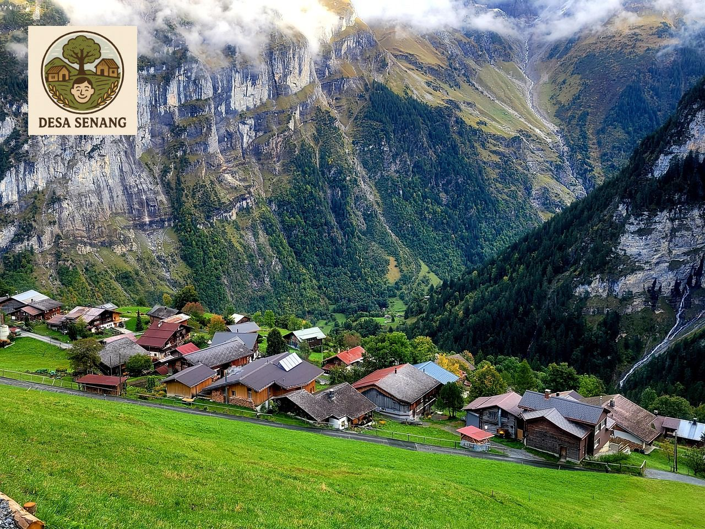
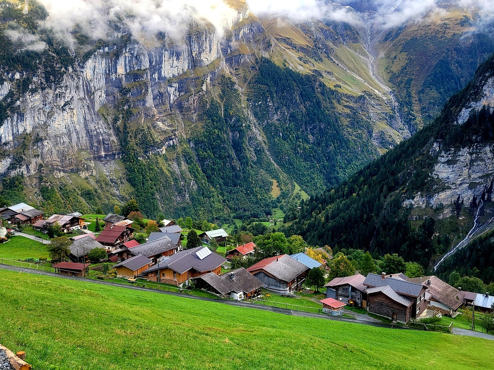

Profil Desa

Tentang Desa
Desa Senang terletak di Kecamatan Makmur, Kabupaten Sejahtera. Dikenal dengan alam yang asri dan masyarakat yang ramah, Sukamaju merupakan desa agraris yang memiliki kekayaan budaya lokal dan potensi wisata alam.
📜 Berdiri sejak 1950, desa ini menjadi pusat pertanian dan kebudayaan lokal.
Data Desa
Jumlah Penduduk:
3.452 jiwa
Luas Wilayah:
1.200 Ha
Jumlah Dusun:
5 Dusun
Pekerjaan Utama:
Petani, Pengrajin
Fasilitas:
Sekolah, Puskesmas, Lapangan
Infrastruktur:
Jalan, Jembatan, Irigasi
Aparatur Desa

Muh Zacky Raihan.S
Perbekel
Belum Rekam Kehadiran

Hilda Nurul Hidayat
Sekretaris Desa
Belum Rekam Kehadiran

Mayrella D. Patioran
Kasi Pemerintahan
Belum Rekam Kehadiran

Kurnia Aljawari
Kasi Kesejahteraan
Belum Rekam Kehadiran

Chakty Theo
Kasi Pelayanan
Belum Rekam Kehadiran
Kontak Desa

 Hubungi via WhatsApp
Hubungi via WhatsApp
Hubungi via WhatsApp
Layanan cepat admin desa melalui WhatsApp, klik tombol di atas!
Kantor 1
Jl. Kantor 1 Desa Senang
Kecamatan Makmur
Kabupaten Sejahtera
Kantor 2
Jl. Kantor 2 Desa Senang
Kecamatan Makmur
Kabupaten Sejahtera
Kontak
628123456789
official@desasenang.com